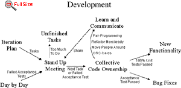

At a typical project meeting
most attendees do not contribute, but attend just to hear the outcome. A large amount of developer time is wasted
to gain a trivial amount of communication. Having many people attend every meeting drains resources from the project
and also creates a scheduling nightmare. At a typical project meeting
most attendees do not contribute, but attend just to hear the outcome. A large amount of developer time is wasted
to gain a trivial amount of communication. Having many people attend every meeting drains resources from the project
and also creates a scheduling nightmare.
Communication among the
entire team is the purpose of the stand up meeting. A stand up meeting every morning is used to communicate problems,
solutions, and promote team focus. Everyone stands up in a circle to avoid long discussions. It is more efficient
to have one short meeting that every one is required to attend than many meetings with a few developers each.
When you have daily stand
up meetings any other meeting's attendance can be based on
who will actually be needed and will contribute. Now it is possible to avoid even scheduling most meetings. With
limited attendance most |

meetings can take place spontaneously in front of a computer, where code can be browsed and ideas actually tried
out.
The daily stand up meeting
is not another meeting to waste people's time. It will replace many other meetings giving a net savings several
times it's own length. 
 |